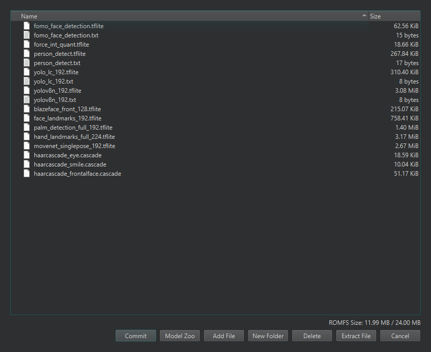

13.1.12. Das ROM-Dateisystem bearbeiten¶
Boards mit ROMFS-Unterstützung tragen ein schreibgeschütztes Dateisystem im Flash, das auf der Kamera unter /rom eingebunden ist. Es wird mit den standardmäßigen Machine-Learning-Modellen des Boards ausgeliefert und ist der Ort, an den die Modelle und Assets eines Produkts gehören: Dateien im ROMFS werden direkt aus dem Flash speicherabgebildet, sodass ein großes Modell geladen werden kann, ohne RAM für eine Kopie zu verbrauchen. Das Untermenü Tools → ROM File System der IDE ist der Editor dafür.
13.1.12.1. Der Editor¶
Edit ROMFS on OpenMV Cam liest das ROMFS der verbundenen Kamera und öffnet es im Editor: ein Dateibaum sowie Schaltflächen zum Hinzufügen von Dateien, Erstellen von Ordnern, Löschen und Extrahieren von Einträgen und zum direkten Einziehen eines Modells aus dem Model Zoo. Eine Auslastungsanzeige verfolgt, wie viel der ROMFS-Partition des Boards der Inhalt belegt. Nichts berührt die Kamera, bis Sie Commit drücken, das fragt, ob das Ergebnis zurück auf die Kamera geschrieben oder als .img-Datei auf die Festplatte gespeichert werden soll.
Beim Hinzufügen von Dateien geschehen automatisch zwei Umwandlungen. Ein .py-Skript wird in .mpy-Bytecode für das Zielboard kreuzkompiliert, und eine Modelldatei wird für die NPU des Boards umgewandelt, wenn es eine hat und das Modell es benötigt. Was im ROMFS landet, ist stets die Form, die die Kamera direkt ausführt.

Der Dialog Edit ROMFS zeigt die Standardinhalte eines Boards – seine Machine-Learning-Modelle – mit der Auslastungsanzeige unten rechts.¶
Open ROMFS File führt denselben Editor gegen eine .img-Abbilddatei auf der Festplatte aus statt gegen eine verbundene Kamera, und New ROMFS File startet ihn leer – in beiden Fällen der Weg, um ein ROMFS-Abbild offline vorzubereiten, zum Flashen in der Produktion oder zum Ausliefern zusammen mit einem Custom-Firmware-Build. Reset ROMFS on OpenMV Cam stellt das ROMFS der verbundenen Kamera auf die Standardwerte des Boards zurück und macht alle Bearbeitungen rückgängig.
Siehe auch
Ein ROMFS-Image erstellen für die Rolle von ROMFS beim Ausliefern einer Anwendung – was dort abgelegt werden soll und wie die Kamera es zur Laufzeit liest.